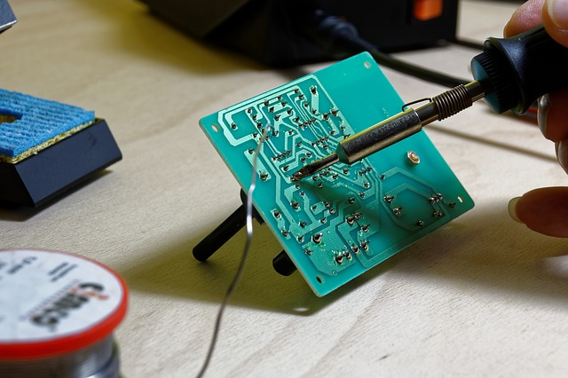

about me
I have two major hobbies: music and tinker with electronics. I listen almost any kind of music
but I love blues, folk and songwrites, and I try to listen all albums that fall in my hands.
I fell I have not enough time to listen music.
But I'm not only a passive listener, I play some instruments, the string based ones because
I have a mini collection of string based instruments: a spanish guitar, two acoustic guitars,
two electric guitars, one acoustic bass, one electric bass and some others.
On electronics I tinker mainly with some microcontrollers like Arduino and some
card based mini computers like Raspberry Pi. But not only, because my passion for music
leads me to construct some pedal effects for my electric guitars. Today you can find
enough information to make your owns thans to internet.

But what makes me really happy all days of my life are mi wife, Ana, and
my little son, Marc. They are my daily support and my best reason to move on.
On the other hand I try to help to Ana on his long life project
as polymer clay artist on a daily basis, but, specially organizing one of the mayor
events of polymer clay workshops in Europe called Polimeralia. You can read more about it
in the official website at polimeralia.com.
You can know me more following in the social networks. The links are below, in the footer.